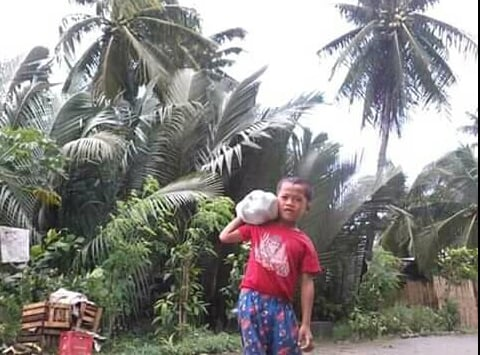
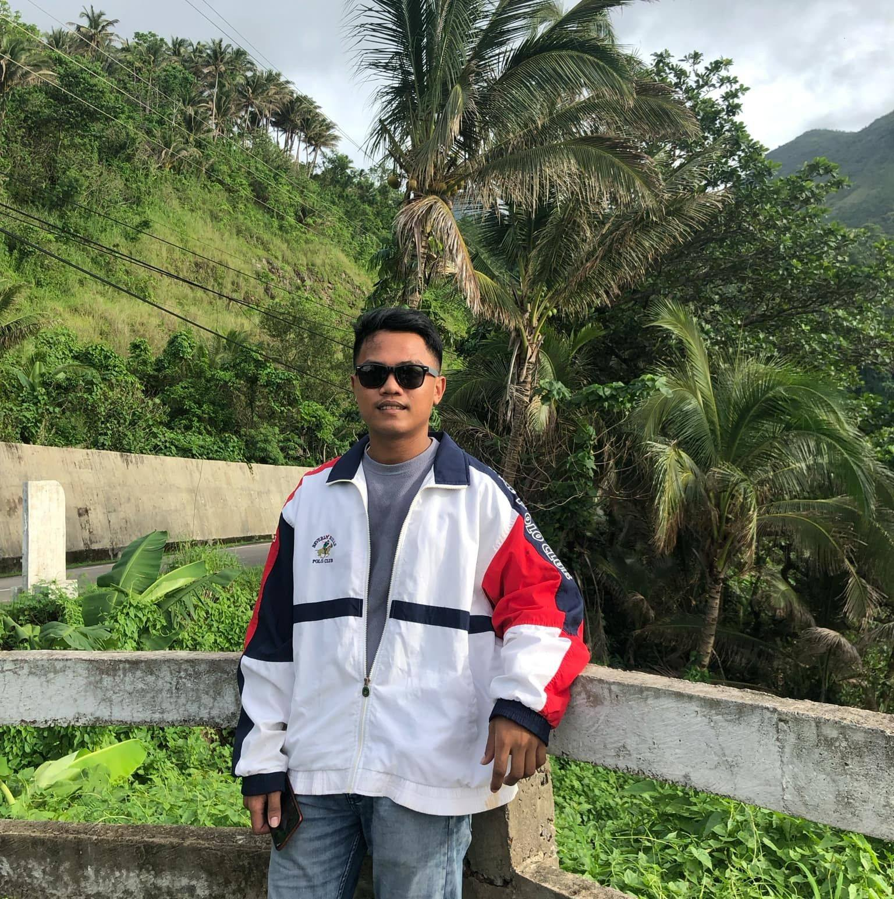

About Myself
- Larianmar C. Pancho BSCS 2
- Larianmar C. Pancho BSCS 2 Purok 5 Matabao Buenavista
- Email: larianmarpancho05@gmail.com
- Single
My childhood
Childhood
Childhood is often remembered as a time of happiness, a period when life was simple, free from the complex worries and responsibilities of adulthood. For many, this sense of happiness in childhood comes from a combination of factors: the sense of security and love from family, the freedom to explore the world with curiosity, and the joy of play and imagination. It is a time when the small moments like a favorite toy, a day at the park, or the comfort of a parent's embrace—can bring immense joy and contentment.
One of the key reasons childhood is often associated with happiness is the lack of adult concerns. Children live in the present moment, without the pressures of financial worries, career goals, or societal expectations. They don’t have to manage relationships the way adults do, nor do they worry about future plans or past regrets. The world is a place of endless wonder, and happiness often arises from simple experiences: running through the rain, blowing bubbles, or discovering something new in nature.
Teenage
This phase, usually spanning from around 13 to 19 years of age, is often marked by a tumultuous blend of physical, emotional, and psychological changes. It is a time when individuals begin to form their identities, make important decisions, and navigate the complexities of growing up. Although adolescence can be challenging, it is also a time of immense growth, exploration, and self-discovery.
The joy of self-discovery, the deep connections formed with friends and family, the thrill of independence, and the excitement of new experiences all contribute to the richness of adolescence. These years lay the foundation for future happiness, as teens learn to navigate life with curiosity, enthusiasm, and a sense of possibility. Ultimately, the teenage years are a time to embrace joy, explore the world, and grow into the person they are becoming.
Adultdhood
Adulthood is often seen as a phase of life where individuals have greater freedom, financial stability, and control over their decisions. It’s a time when people typically establish careers, build relationships, and work toward personal and professional goals. However, while adulthood brings opportunities for happiness and fulfillment, it also introduces its own set of challenges and problems. In this essay, we will explore both the aspects of happiness and the challenges that come with adulthood.
On one hand, it offers the rewards of financial independence, meaningful relationships, career success, and personal growth. On the other hand, adulthood also introduces the pressures of work-life balance, financial burdens, health concerns, and relationship struggles.Ultimately, the experience of adulthood is shaped by how individuals navigate these challenges and embrace the opportunities for happiness and fulfillment that arise. By learning to manage responsibilities, build strong relationships, and take care of their physical and mental well-being, adults can create a balanced life that includes both joy and resilience in the face of adversity.